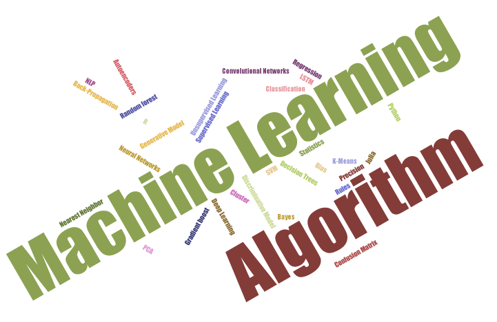
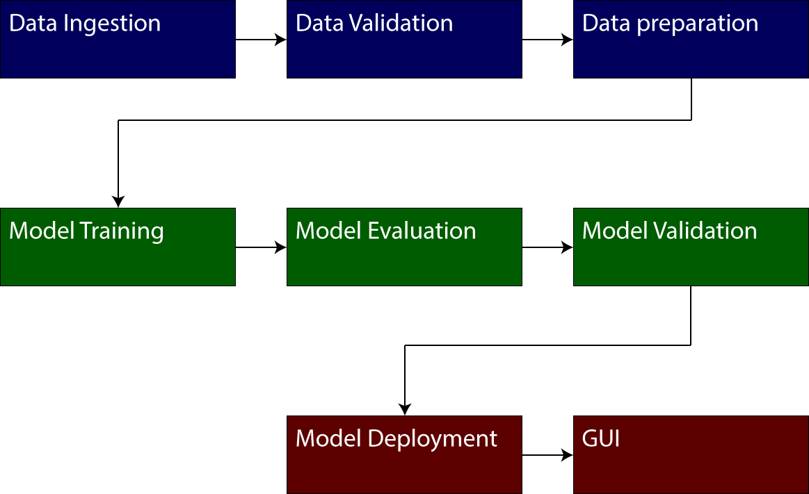
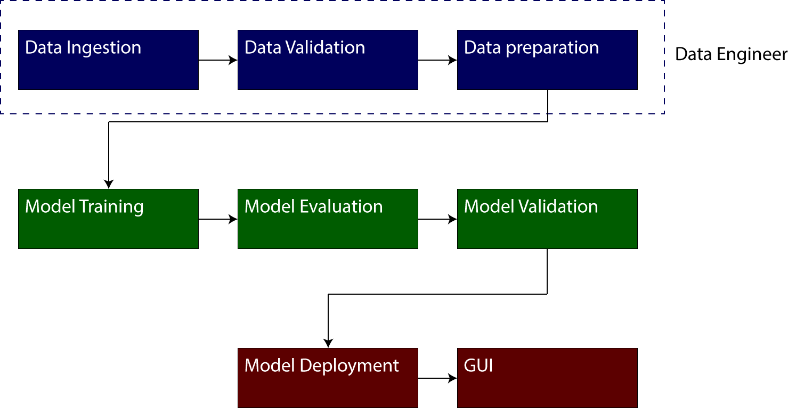
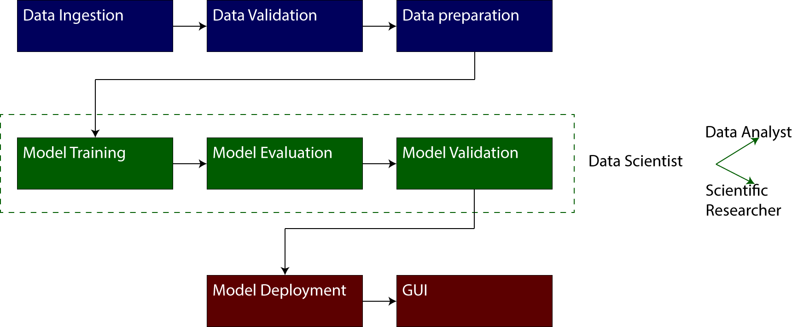
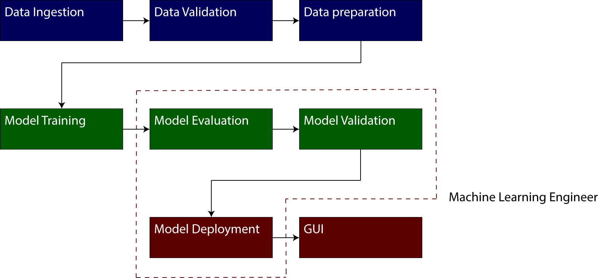
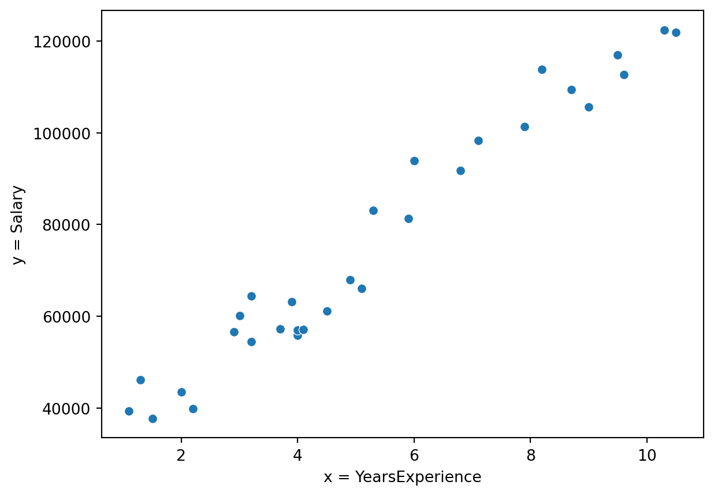
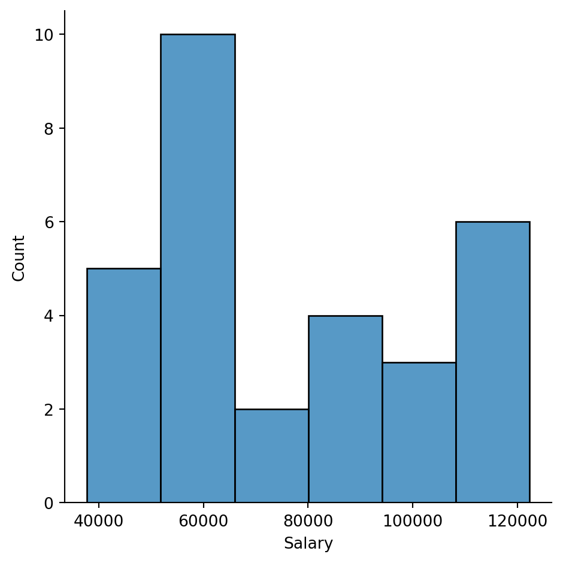
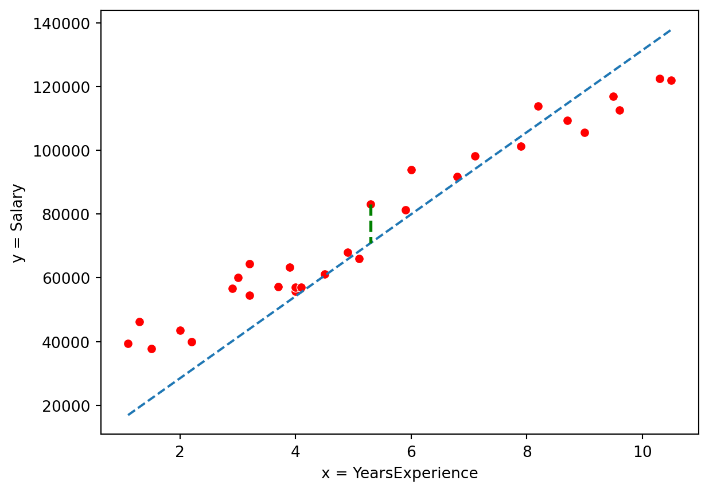

import pandas as pd
data_spotify = pd.read_csv(path_to_data + "/spotify/tracks.csv")Machine Learning
Ingeniería de software y computación
Sitio de la asignatura machine learning en la UniAutonoma del Cauca
Presentación
El Profesor
Educación
Doctor en Ciencias de la Electrónica. Magíster en Ingeniería Electrónica y Telecomunicaciones Ingeniero en Electrónica y Telecomunicaciones
Intereses
Biomecánica, Dispositivos para el análisis de movimiento humano, ciencia de los datos.
Desempeño
Profesor de la Facultad de Ingeniería & Ciencias Naturales
Invest. Línea de Percep. Avanz. y Robótica – GITA
Director Grupo de Investigación MEDES.
Director del laboratorio de datos de la Uniautonoma.
Contacto:
pablo.caicedo.r@uniautonoma.edu.co
Contenido del curso

- Análisis exploratorio de datos
- Problemas de regresión
- Tópicos avanzados en clasificación
Evaluación
- Comprensión de lectura (Inglés) (10%)
- Consigna 001. Análisis exploratorio de datos (25%)
- Consigna 002. Problemas de Regresión (25%)
- Consigna 002. Proyecto Final (40%)

Recursos
Clases
Lunes, Martes, Jueves y Viernes 11:00 – 13:00 Sala 504
Software
Interpretes: Python, R, Latex(TEXLive), Anaconda.
IDE: Visual Studio Code, Google Colaboratory (R, Python)
Librerías Pandas, Matplotlib, Seaborn, Keras, Tensorflow, Numpy, SciKit-Learn, SciPy
Seguimiento de Aprendizaje: Moodle
Bibliografía
B. Boehmke y B. M. Greenwell, Hands-on machine learning with R. Boca Raton: CRC Press, 2019.
G. Bonaccorso, Mastering machine learning algorithms: expert techniques to implement popular machine learning algorithms and fine-tune your models. 2018.
M. Fenner, Machine learning in python for everyone. Boston, MA: Addison-Wesley, 2019.
K. Kolodiazhnyi, Hands-On Machine Learning with C++ Build, Train, and Deploy End-To-end Machine Learning and Deep Learning Pipelines. Birmingham: Packt Publishing, Limited, 2020. Accedido: 28 de septiembre de 2021.
M. Kubat, An Introduction to Machine Learning. Cham: Springer International Publishing, 2017. doi: 10.1007/978-3-319-63913-0.
S. Raschka y V. Mirjalili, Python machine learning: machine learning and deep learning with Python, scikit-learn, and TensorFlow, Second edition, Fourth release,[fully revised and Updated]. Birmingham Mumbai: Packt Publishing, 04.
S. Skansi, Introduction to Deep Learning: From Logical Calculus to Artificial Intelligence. Cham: Springer International Publishing, 2018. doi: 10.1007/978-3-319-73004-2.
Análisis exploratorio de datos
A little reminder …

A little reminder …

A little reminder …

A little reminder …

A little reminder …

Exploratory Data Analysis (EDA)
Definition
The art of looking the underlying structure of the information through one or more datasets.
Definition by Diaconis, P.
We look at numbers or graphs and try to find patterns. We pursue leads suggested by background information, imagination, patterns perceived, and experience with other data analyses.
Exploratory Data Analysis (EDA)
EDA, depends on two things:
Type of variable scale (information type, categorical, numerical, continuous, discrete, etc).
Objective and type of the analysis (graphical, numerical, correlation, etc)
Learning from the example
Spotify
“Spotify offers digital copyright restricted recorded music and podcasts, including more than 82 million songs, from record labels and media companies” from wikipedia
Spotify Dataset
The data set is located in the kaggle site. Dataset
Learning from the example
Analysis Objective
Spotify wants to know if there is a relationship between the popularity of a song and the number of followers of its singers. The above to generate strategies to attract new singers to the platform.
Learning from the examples
General Workflow
- Import dataset.
- Preprocessing dataset.
- EDA on the datasets.
- Train the machine learning model.
- Predict the target using the trained model.
Import dataset.
General workflow for Importing a dataset in python
Install conda environment manager
Install a suitable conda environment.
Install python libraries. At least, a machine learning project without deployment needs:
- Numpy
- Pandas
- Matplotlib
- Seaborn
- Scikit-Learn
- Jupyter
Install a suitable IDE software.
Script, script, script.
Import dataset
data_spotify.head(5)| id | name | popularity | duration_ms | explicit | artists | id_artists | release_date | danceability | energy | key | loudness | mode | speechiness | acousticness | instrumentalness | liveness | valence | tempo | time_signature | |
|---|---|---|---|---|---|---|---|---|---|---|---|---|---|---|---|---|---|---|---|---|
| 0 | 35iwgR4jXetI318WEWsa1Q | Carve | 6 | 126903 | 0 | ['Uli'] | ['45tIt06XoI0Iio4LBEVpls'] | 1922-02-22 | 0.645 | 0.4450 | 0 | -13.338 | 1 | 0.4510 | 0.674 | 0.7440 | 0.151 | 0.127 | 104.851 | 3 |
| 1 | 021ht4sdgPcrDgSk7JTbKY | Capítulo 2.16 - Banquero Anarquista | 0 | 98200 | 0 | ['Fernando Pessoa'] | ['14jtPCOoNZwquk5wd9DxrY'] | 1922-06-01 | 0.695 | 0.2630 | 0 | -22.136 | 1 | 0.9570 | 0.797 | 0.0000 | 0.148 | 0.655 | 102.009 | 1 |
| 2 | 07A5yehtSnoedViJAZkNnc | Vivo para Quererte - Remasterizado | 0 | 181640 | 0 | ['Ignacio Corsini'] | ['5LiOoJbxVSAMkBS2fUm3X2'] | 1922-03-21 | 0.434 | 0.1770 | 1 | -21.180 | 1 | 0.0512 | 0.994 | 0.0218 | 0.212 | 0.457 | 130.418 | 5 |
| 3 | 08FmqUhxtyLTn6pAh6bk45 | El Prisionero - Remasterizado | 0 | 176907 | 0 | ['Ignacio Corsini'] | ['5LiOoJbxVSAMkBS2fUm3X2'] | 1922-03-21 | 0.321 | 0.0946 | 7 | -27.961 | 1 | 0.0504 | 0.995 | 0.9180 | 0.104 | 0.397 | 169.980 | 3 |
| 4 | 08y9GfoqCWfOGsKdwojr5e | Lady of the Evening | 0 | 163080 | 0 | ['Dick Haymes'] | ['3BiJGZsyX9sJchTqcSA7Su'] | 1922 | 0.402 | 0.1580 | 3 | -16.900 | 0 | 0.0390 | 0.989 | 0.1300 | 0.311 | 0.196 | 103.220 | 4 |
Preprocessing dataset.
General workflow for Preprocessing
- Check the digital structure of the dataset
- Check for digital information type
- Check for nan
- Check for outlier
Preprocessing dataset.
type(data_spotify)pandas.core.frame.DataFramedata_spotify.shape(586672, 20)data_spotify.size11733440Preprocessing dataset.
data_spotify.describe()| popularity | duration_ms | explicit | danceability | energy | key | loudness | mode | speechiness | acousticness | instrumentalness | liveness | valence | tempo | time_signature | |
|---|---|---|---|---|---|---|---|---|---|---|---|---|---|---|---|
| count | 586672.000000 | 5.866720e+05 | 586672.000000 | 586672.000000 | 586672.000000 | 586672.000000 | 586672.000000 | 586672.000000 | 586672.000000 | 586672.000000 | 586672.000000 | 586672.000000 | 586672.000000 | 586672.000000 | 586672.000000 |
| mean | 27.570053 | 2.300512e+05 | 0.044086 | 0.563594 | 0.542036 | 5.221603 | -10.206067 | 0.658797 | 0.104864 | 0.449863 | 0.113451 | 0.213935 | 0.552292 | 118.464857 | 3.873382 |
| std | 18.370642 | 1.265261e+05 | 0.205286 | 0.166103 | 0.251923 | 3.519423 | 5.089328 | 0.474114 | 0.179893 | 0.348837 | 0.266868 | 0.184326 | 0.257671 | 29.764108 | 0.473162 |
| min | 0.000000 | 3.344000e+03 | 0.000000 | 0.000000 | 0.000000 | 0.000000 | -60.000000 | 0.000000 | 0.000000 | 0.000000 | 0.000000 | 0.000000 | 0.000000 | 0.000000 | 0.000000 |
| 25% | 13.000000 | 1.750930e+05 | 0.000000 | 0.453000 | 0.343000 | 2.000000 | -12.891000 | 0.000000 | 0.034000 | 0.096900 | 0.000000 | 0.098300 | 0.346000 | 95.600000 | 4.000000 |
| 50% | 27.000000 | 2.148930e+05 | 0.000000 | 0.577000 | 0.549000 | 5.000000 | -9.243000 | 1.000000 | 0.044300 | 0.422000 | 0.000024 | 0.139000 | 0.564000 | 117.384000 | 4.000000 |
| 75% | 41.000000 | 2.638670e+05 | 0.000000 | 0.686000 | 0.748000 | 8.000000 | -6.482000 | 1.000000 | 0.076300 | 0.785000 | 0.009550 | 0.278000 | 0.769000 | 136.321000 | 4.000000 |
| max | 100.000000 | 5.621218e+06 | 1.000000 | 0.991000 | 1.000000 | 11.000000 | 5.376000 | 1.000000 | 0.971000 | 0.996000 | 1.000000 | 1.000000 | 1.000000 | 246.381000 | 5.000000 |
Problemas de regresión
Linear Regression, python preparation
import pandas as pd
import seaborn as sns
import matplotlib.pyplot as plt
import numpy as np
archivoData = path_to_data+"/Salario/data_for_class.csv"
data = pd.read_csv(archivoData,delimiter=",", decimal=".")Salary vs Years of experience scatter plot
ax1 = sns.scatterplot(data=data, x="YearsExperience", y="Salary")
ax1.set(xlabel='x = YearsExperience', ylabel='y = Salary')
plt.show()Salary vs Years of experience scatter plot

Salary histogram
ax2 = sns.displot(data=data, x="Salary")
plt.show()Salary histogram

Linear Regression

Linear Regression
In the example, in previous slide, data was modelled as a linear function. The difference (error) between the modelled data \(\left( \hat{y}_n \right)\) and actual data \(\left( y_n \right)\) can be written as
Cost function
\[E = \frac{1}{N} \sum_{n=1}^{N}{\left( \hat{y}_n - y_n \right)^2}\]
Some other examples of cost function
\[E = \sqrt{\frac{1}{N} \sum_{n=1}^{N}{\left( \hat{y}_n - y_n \right)^2}}\]
\[E = \frac{1}{N} \sum_{n=1}^{N}{\left| \hat{y}_n - y_n \right| }\]
Gradient Descent algorithm
Looking the cost surface, we notices that this surface has a global minimum. If we could have an algorithm which automatically finds it.

Gradient Descent algorithm
Indeed, there are multiples algorithms for minima searching. The most famous is the one named as least squares but in this course we will use the gradient descent algorithm.
Assuming that the data model is a function \(f\left(\theta_i, x_n, y_n\right)\), where \(\theta\) is known as model parameter.
The gradient descent algorithm
\[\boldsymbol{\theta}_{i,j+1} = \boldsymbol{\theta}_{i,j} - \eta \frac{\partial E}{\partial \boldsymbol{\theta}_{i}}\]
Gradient Descent algorithm
Assumptions
- Linear model for the Regression
- Mean square error as cost function
- \(\eta = 1\)
\[\boldsymbol{\theta}_i = \left[ \theta_1, \theta_0 \right]^T\]
\[\hat{y}_n = \theta_1 x_n + \theta_0\]
\[E = \frac{1}{N} \sum_{n=1}^{N}{\left( \theta_1 x_n + \theta_0 - y_n \right)^2}\]
Gradient Descent algorithm
For \(\theta_1\) estimation
\[\boldsymbol{\theta}_{1,j+1} = \boldsymbol{\theta}_{1,j} - \eta \frac{\partial E}{\partial \boldsymbol{\theta}_{1}}\]
\[\frac{\partial E}{\partial \boldsymbol{\theta}_{1}} = \frac{\partial}{\partial \boldsymbol{\theta}_{1}} \left( \frac{1}{N} \sum_{n=1}^{N}{\left( \theta_1 x_n + \theta_0 - y_n \right)^2} \right) \]
\[\frac{\partial E}{\partial \boldsymbol{\theta}_{1}}= \frac{1}{N} \frac{\partial}{\partial \boldsymbol{\theta}_{1}} \left( \sum_{n=1}^{N}{\left( \theta_1 x_n + \theta_0 - y_n \right)^2} \right) \]
\[\frac{\partial E}{\partial \boldsymbol{\theta}_{1}}= \frac{1}{N} \sum_{n=1}^{N}{\frac{\partial}{\partial \boldsymbol{\theta}_{1}} \left( \left( \theta_1 x_n + \theta_0 - y_n \right)^2\right)}\]
\[\frac{\partial E}{\partial \boldsymbol{\theta}_{1}}= \frac{1}{N} \sum_{n=1}^{N}{2 \left( \theta_1 x_n + \theta_0 - y_n \right) x_n}\]
Gradient Descent algorithm
For \(\theta_0\) estimation
\[\boldsymbol{\theta}_{0,j+1} = \boldsymbol{\theta}_{0,j} - \eta \frac{\partial E}{\partial \boldsymbol{\theta}_{1}}\]
\[\frac{\partial E}{\partial \boldsymbol{\theta}_{0}} = \frac{\partial}{\partial \boldsymbol{\theta}_{0}} \left( \frac{1}{N} \sum_{n=1}^{N}{\left( \theta_1 x_n + \theta_0 - y_n \right)^2} \right) \]
\[\frac{\partial E}{\partial \boldsymbol{\theta}_{0}}= \frac{1}{N} \frac{\partial}{\partial \boldsymbol{\theta}_{0}} \left( \sum_{n=1}^{N}{\left( \theta_1 x_n + \theta_0 - y_n \right)^2} \right) \]
\[\frac{\partial E}{\partial \boldsymbol{\theta}_{0}}= \frac{1}{N} \sum_{n=1}^{N}{\frac{\partial}{\partial \boldsymbol{\theta}_{0}} \left( \left( \theta_1 x_n + \theta_0 - y_n \right)^2\right)}\]
\[\frac{\partial E}{\partial \boldsymbol{\theta}_{0}}= \frac{1}{N} \sum_{n=1}^{N}{2 \left( \theta_1 x_n + \theta_0 - y_n \right)}\]
Changing the cost function and the data model
\[ \begin{eqnarray} E & = & \frac{1}{N} \sqrt{u}\\ \frac{\partial E}{\partial \boldsymbol{\theta}_{0}} &=& \frac{1}{2 N \sqrt{u}} \frac{\partial u}{\partial \boldsymbol{\theta}_{0}}\\ \frac{\partial u}{\partial \boldsymbol{\theta}_{0}} &=& 2\sum_{n=1}^{N}{\left( \theta_2 x_{n}^{2} + \theta_1 x_n + \theta_0 - y_n \right)}\\ \frac{\partial E}{\partial \boldsymbol{\theta}_{0}} &=& \frac{2\sum_{n=1}^{N}{\left( \theta_2 x_{n}^{2} + \theta_1 x_n + \theta_0 - y_n \right)}}{2 N \sqrt{u}} \end{eqnarray} \]
Changing the cost function and the data model
\[ \begin{eqnarray} \frac{\partial E}{\partial \boldsymbol{\theta}_{0}} &=& \frac{\sum_{n=1}^{N}{\left( \theta_2 x_{n}^{2} + \theta_1 x_n + \theta_0 - y_n \right)}}{N \sqrt{\sum_{n=1}^{N}{\left( \theta_2 x_{n}^{2} + \theta_1 x_n + \theta_0 - y_n \right)^2}}}\\ \frac{\partial E}{\partial \boldsymbol{\theta}_{1}} &=& \frac{\sum_{n=1}^{N}{x_n \left( \theta_2 x_{n}^{2} + \theta_1 x_n + \theta_0 - y_n \right)}}{N \sqrt{\sum_{n=1}^{N}{\left( \theta_2 x_{n}^{2} + \theta_1 x_n + \theta_0 - y_n \right)^2}}}\\ \frac{\partial E}{\partial \boldsymbol{\theta}_{2}} &=& \frac{\sum_{n=1}^{N}{x_n^2 \left( \theta_2 x_{n}^{2} + \theta_1 x_n + \theta_0 - y_n \right)}}{N \sqrt{\sum_{n=1}^{N}{\left( \theta_2 x_{n}^{2} + \theta_1 x_n + \theta_0 - y_n \right)^2}}} \end{eqnarray} \]